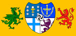
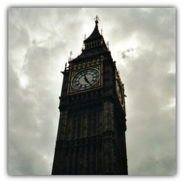

Ponferrada
 De: La Frikipedia, la enciclopedia extremadamente seria.
De: La Frikipedia, la enciclopedia extremadamente seria.
| De la serie pueblos del mundo:
|
| El Bierzo
|
| 
|
|
| (Bandera)
|
(Escudo de armas)
|
|
| Topónimo oficial
|
Montagnnes
|
| País
|
País Llionés
|
| Código postal
|
No hay, usan cuernos de caza ululantes
|
| Superficie
|
Un sistema montañoso entero
|
| Altitud
|
10.000 km sobre las Médulas
|
| Distancia
|
Al lado de Dios
|
| Fundación
|
51 D.C.
|
| Población
|
Masones y peperos, etc.
|
| Gentilicio
|
Suevos
|
| Alcalde
|
Tarja Turunen
|
Ponferrada es una villa mitológica donde los dioses celtas Larouco y Bandua tienen su dulce morada. Por ello es capital del Bierzo. Limita al norte con un río, al oeste con León, al sur con otro río y al oeste con Irlanda. Actualmente en ella sólo existe un parque de atracciones de Disney World.
Datos de interés
El lugar está habitado por tres tipos diferentes de homínidos:
- Hombres-oso: de los de la raza del que mató al rey Favila.
- Hombres-lobo: más maricones que los de Crepúsculo.
- Hombresexuales: típico ponferradino que harto del hábitat que le tocó vivir suele abrir un pub o emigrar a Francia.
Historia
Ponferrada fue fundada por los cartaginenses para poder conquistar a los castreños del lugar. Como no lo consiguieron llamaron a los romanos para que les ayudasen, pero éstos fueron más listos y destruyeron a los cartaginenses y pusieron a los celtas a trabajar en las minas de oro de las Médulas prometiéndoles que el oro sería para hacer grandes fiestas con jabalí.
Cuando sus habitantes descubrieron que era un engaño dieron un golpe de estado y pusieron al general Franco al mando de su independencia, pero éste se fue a Benidorm no sin antes provocar la Segunda Restauración Borbónica, y desde entonces todos los hombres-lobo de la región ven Intereconomía.
Monomentos
 Típica estampa de Ponferada.
- Base secreta nazi: camuflada como castillo templario, está lleno de pasadizos y celdas donde los nazis de Franco crearon las distintas especies homínidas que asolan la región.
- Basílica de Superpiñeiro: aunque dentro hay una encina sobre la cual apareció un ovni que fue el que talló un mensaje indescifrable en las montañas de las Médulas.
- Catedral de San Frutuoso de Braga: templo de un adorador de Cthulhu que dejó allí para cuando su dios despertase en un lugar importante vamos.
- Capilla de Santo Tomás de las Pollas: aquí un santo varón se enfrentó al Penedector. Al morir ente las fauces del monstruo éste le construyó un templo en su honor para que los restantes humanos viesen lo que les podía pasar si se enfrentaban a él.
- Escuela de Cine de Ponferrada: en los 80 Pedro Almodóvar huyó de Castilla para refugiarse con san Frutuoso en los montes del lugar y tener experiencias religiosas. Como él no las conseguía se puso a dar clases porque nadie le daba limosna por "modelno".
Otros monumentos y lugares de interés
- La Calle del Reloj: copiada igualita que a la del Big Ben en Londres.
- La Torre del Reloj: lugar desde donde se suele llamar a la oración a los creyentes en Azathoth.
- La Casa Consistorial: construida por el capitán Alatriste para gobernar Espiña.
- Iglesia de San Andrés: lugar donde se celebran orgías báquicas y sus integrantes realizan cálculos de trigonometría.
- Museo de El Bierzo: edificio habitado por seis fantasmas que si te metes dentro te pueden hacer de todo.
- Museo del Ferrocarril: edificio lleno de las máquinas que usaron los fenicios para conquistar España.
- Museo de la Energía: Edifico que a su vez contiene los museos mencionados arriba, gracia los cuales transforma a los visitantes en átomos con más peso atómico y los transfiere a un condensador de fluzo, gracias al cual Walter Bishop puede realizar sus sabrosos siropes de fresa con salsa picante.
Autor(es):
- Fordus
- Titvs
- Generibot
- Albermolina
Frikipedia 2005-2016, Licencia
GFDL 1.2 - Extraído por FrikiLeaks